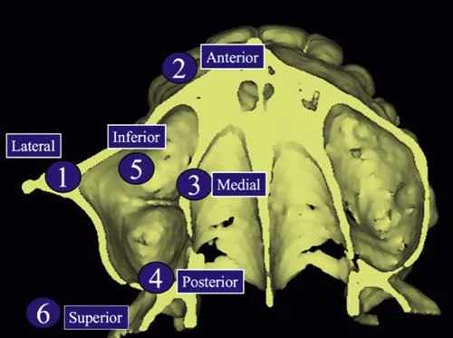
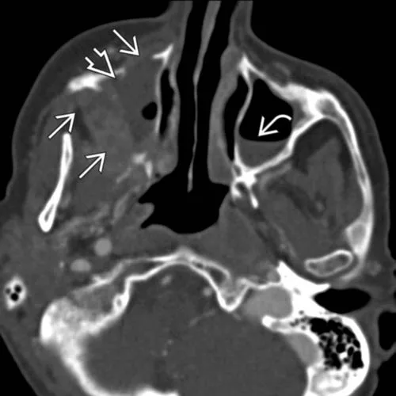

نسخه استخراجشده؛ ترجمه یا تأیید علمی انجام نشده است. وضعیت: captured
سه ساختار بیش از بقیه سرنوشت پیوند سینوس را تعیین میکنند.
۱. اوستیوم — راه اصلی خروج. سینوس ماگزیلا از راه اوستیوم در بخش فوقانی و قدامی خود تخلیه میشود. انسداد در ناحیهی کمپلکس اوستیومئاتال تخلیهی سینوسهای ماگزیلا، فرونتال و اتموئید را مختل میکند و میتواند به رینوسینوزیت و عوارض پس از پیوند بینجامد. درگیری این کمپلکس در ۲۷ تا ۶۰ درصد بیماران مبتلا به سینوزیت با منشأ دندانی به سینوسهای مجاور گسترش مییابد، و ۲۰ درصد این سینوزیتها دوطرفهاند.
قاعدهی عملی که از این میآید: باز نگه داشتن اوستیوم در دورهی پس از عمل، جزئی از خود درمان است نه یک ملاحظهی جانبی.
۲. سپتا — دیوارهای پنهان. حدود ۳۰ درصد ماگزیلاهای دنداندار سپتا دارند و شایعترین محلشان ناحیهی میانی سینوس (پرمولر دوم تا مولر اول) است. مطالعات CBCT توزیع را چنین گزارش کردهاند: ۴۱ درصد ناحیهی میانی، ۳۵ درصد خلفی، ۲۴ درصد قدامی. سپتای کامل که سینوس را به اتاقکهای جدا تقسیم کند بسیار نادر است: تنها ۱ تا ۲٫۵ درصد.
چرا مهم است؟ چون سپتا پروسیجر پنجرهی جانبی را پیچیده میکند و احتمال پارگی ممبران را بالا میبرد. سپتایی که در CBCT ندیده باشی، هنگام بلند کردن ممبران خودش را نشان میدهد — در بدترین لحظه.
۳. شریان درون دیواره. بزرگترین رگ دیوارهی جانبی، آناستوموز داخلاستخوانی میان شریان آلوئولار فوقانی خلفی و شریان اینفرااوربیتال است. قطع این رگ حین تراش پنجره میتواند خونریزی قابلتوجهی بسازد؛ آناستوموز دیگری هم درون پریوست هست که با کنار زدن بیدقت فلپ آسیب میبیند، و بریدن این عروق با درد، ادم و اکیموز پس از عمل همراه است.
و یک هشدار جداگانه دربارهی دیوارهی مدیال: بلند کردن تهاجمی ممبران از این دیوارهی نازک میتواند هم به رگ آسیب بزند و هم به حفرهی بینی راه باز کند.

ارزیابی پیش از پیوند سینوس فقط اندازهگیری ارتفاع استخوان نیست؛ غربالگری شرایطی است که یا زمان جراحی را عوض میکنند یا خودِ رویکرد را.
سودوکیست — عدد را بشناس. سودوکیست کوچک معمولاً مانع نیست، اما وقتی قطرش از حدود ۸ میلیمتر بگذرد، بلند کردن ممبران میتواند کیست را بالا ببرد و اوستیوم را مسدود کند؛ و در ابعاد بیش از حدود ۱۰ میلیمتر این انسداد و در نتیجه خطر عفونت پس از عمل جدیتر میشود.
منطق را ببین: مشکل خودِ کیست نیست، جابهجا شدنش به سمت راه اصلی خروج است.
سپتوم منحرف. اگر انحراف سپتوم شدید باشد و اوستیوم را ناباز کند، ارجاع به ENT بهشدت توصیه میشود. این تصمیمی است که باید پیش از جراحی گرفته شود، نه پس از عفونت.
پاتولوژی فعال. پس از ترمیم بافت نرم داخلدهانی و رفع وضعیت پاتولوژیک — حداقل ۶ هفته — پیوند یا کاشت با کمترین موربیدیتی قابل انجام است. و یک نکتهی هوشمندانه: اگر ارتفاع استخوان رویکرد SA-3 را توجیه کند ولی پاتولوژی وجود داشته باشد، اغلب بهتر است به SA-4 تغییر مسیر داد؛ یعنی پیوند و کاشت را از هم جدا کرد.
آلرژی فصلی. اگر سینوزیت بیمار با تب یونجه یا آلرژی به علف مرتبط است، جراحی باید در فصلی انجام شود که کمترین خطر تحریک مخاط سینوس را دارد — یعنی زمستان یا پاییز.
سیگار. منع مطلق نیست، اما مطالعات خطر بیشتر دهیسنس زخم، عفونت و جذب گرافت و احتمال کمتر استئواینتگریشن را نشان دادهاند. اگر تصمیم به جراحی گرفته شد، توصیهی استاندارد مشخص است: قطع سیگار دستکم ۱۵ روز پیش از جراحی (زمان لازم برای پاک شدن سیستمیک نیکوتین) و ۴ تا ۶ هفته پس از آن.

نوع سؤال: ساخت کلمه · 9 خانه
حروف منبع: و · و · ا · ل · ت · ک · پ · ژ · ی